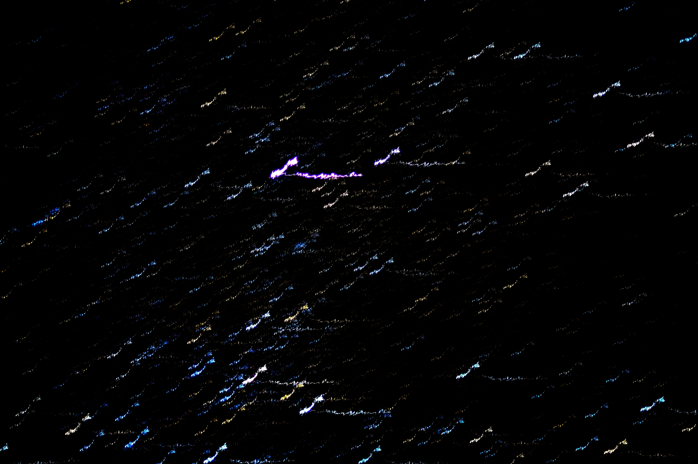

The purpose of the photograph is to atomically preserve a moment. When you randomly throw darts at a dart-board, the likelihood of hitting a spot \((x, y)\) is exactly 0. Proof: each spot is equally likely, and there are infinitely many spots on the dart-board, so if for some \((x_0, y_0)\) we have \(P(x_0, y_0) > 0\), then the likelihood of hitting the dartboard at all would equal \(\infty\)-many spots \(\times\) non-zero likelihood per spot \(= \infty > 1\) (contradiction) \(\blacksquare\) Time (being continuous) is experienced much like a dart-board: we remember its procession, but forget the infinitesimal units tick-tocking by. Photographs capture these infinitesimal units, documenting the superficial impossibility of where darts eventually land. Photography is supposed to remind us that time is atomic. Social media depreciates photography through abundance, because with enough tiny little temporal building blocks, we zoom out from atomic moments to continuous narratives. Social media is all about narratives, and narratives are gross! Narratives imply a false hero’s journey, emphasizing the retrospective arc as opposed to the instantaneous progression of a story. Social media is a pesticide on storytelling: it makes stories common, homogenous, and socially carcinogenic. There is a silent spring of photography happening that threatens storytelling and, by extension, cultural identification.
Candid is a vernacular noun for a photograph that is not posed (and that is therefore presumably authentic). Consider some classic candids. Phan Thi Kim Phuc (aka Napalm Girl) by Nick Ut candidly captures a 9-year old girl nakedly burning under the veneer of napalm. Nick Ut says: war is composed of uncountably many Napalm Girls. Muhammad Ali vs. Sonny Liston by Neil Leifer candidly captures Muhammad Ali whupping Sonny Liston. Neil Leifer says: Muhammad Ali merced Sonny Liston and he can merc you too. The units of war are acts of violence and the units of a fighting career are fights. Candids force us to acknowledge the cost or value and frequency or rarity of these moments, and the collective consequence of the narratives that contain them.

The abundance and value of a good are inversely proportional. Social media makes photography abundant, therefore social media depreciates photography. I have 2 wonderful younger siblings: my sister Sophia and my brother Sam. In 20 years I would prefer 1 excellent candid of them and their relationship over 1,000 banal proof-statements of their existence. A single photograph can explain something special about my siblings, but a thousand photographs cannot. The division of attention needed to consume a thousand photographs precludes the focus needed to really process any single one, so that in the end you would know that my siblings exist but not who they are.

The problem with social media is not purely that of media saturation. More, it is the imposition of narrative structure. The purpose of social media is to share your day-to-day routine. But we don’t share everything: nobody wants to know if I’m taking a dump or doing pure mathematics homework or reading papers on data integrity. In fact, if I share these activities on a social media platform, the platform’s algorithms will deduce that my life is boring, and will reduce the subset of friends who ever see my posts so as not to bore those friends into using the platform less. In class we read Snow by Anne Beattie, an average story containing one great sentence:
“Any life will seem dramatic if you omit mention of most of it” (p1).By algorithmic construction, the only way to share your life on social media is to omit mention of most of it.
If I share only that which interests the lowest-common-denominator of my friend group, then I am pretending to be a bizarre contraction of myself, an avatar with \(\approx \frac{4}{5}\) my IQ, \(10\times\) my free-time, and twice my charisma. Walden is the best book in the English language, and its most dramatic scenes go as follows: (a) the author observes an ant-hill, and (b) the author observes men cutting ice. We watch TV for drama; literature is about beauty. Nietzsche wrote in Beyond Good and Evil that systems of morals are sign-languages for the emotions. I have always taken an intuitionist view on ethics, because I don’t have enough time to take research-based perspectives, so I find this quote appealing. Emotionally, I want my life to be like great literature: all zany dialogue and simmeringly rich observation. I therefore pivot my morals to justify this desire, and conclude that engagement in social media is morally wrong because it incentivizes base drama over either zany dialogue or simmeringly rich observation. Hence: I do not participate in traditional social media.

Culture is collective narrative. Narratives are defined by their main characters: Joseph Campbell proves this point ad nauseum. Social media is supposed to empower us to feel like main characters in our own stories, putting our own cultural identities at narrative odds with those of our friends. We can’t all be Skywalker. In order to make our respective narratives compatible, we invent weird internet shibboleths. For example: the retweet. On Twitter, user \(\zeta\) tweets \(x\). Within \(\zeta\)'s hero-journey, this is like when Zarathustra returned from the wilderness after surviving the adder's bite, and shared his knowledge with the villagers. (The adder cannot hurt me, for I am a dragon! Observe: “\(x\)”.) User \(\gamma\) sees \(x\) on her timeline, and is jealous of this higher wisdom! How can \(\gamma\) be the ubermensch, if \(\zeta\) thought of \(x\) first? By retweeting \(x\) with some commentary \(y\), user \(\gamma\) makes her own original wisdom \((x + y)\), in the same way that Nietzsche first studied Cicero and Goethe before sharing his own take on things. In \(\gamma\)'s story, \(\zeta\) is a supporting actor, and in \(\zeta\)'s story, \(\gamma\) is an applauding critic. The retweet is a shibboleth that allows narrative compatibility between two opposing stories without ever settling the fundamental differences between them. Of course neither \(\zeta\) nor \(\gamma\) is an uber-anything. Even the most optimal computer compression could never squeeze real wisdom into 120 characters.
In the real world the relative import of characters is clear. For example, my friend Emma’s father Seth Lloyd is himself friends with Cormac McCarthy. Seth finished writing a book on quantum computing and asked Cormac if he’d like to read it. Cormac indicated he would edit it! Seth emailed the book to Cormac, and waited 3 weeks. He wrote to Cormac: any progress with the edits? Cormac replied that he needed another week. Seth waited 7 days on bated breath. The book arrived. Seth opened the .word file, anxious to see what linguistic magic his friend had worked. Cormac had gone through the text and systematically deleted all the commas, leaving the rest intact. This is Pulitzer-prize winning humor. Cormac is the Sherlock of the story, and Seth is at best the Watson, but more likely the Mrs. Hudson or some such side-character. We love the story because it illustrates a fundamental silliness in Cormac, who is a hero and cultural icon. At a larger level the story illustrates a silliness in the American ethos. We are intellectually silly; Americans are rebels. This is a cultural narrative with a protagonist and a supporting cast.
Social media coddles each consumer in their own micro-culture. By omitting information that conflicts with the consumer’s own narrative, the platform scrapbooks together a convincing paracosm which masquerades as shared culture. This paracosm is convincing because it is supported by hard evidence: candids and videos documenting the highly dramatic lives of the consumer and her friends. Because the paracosm is consumer-specific, there cannot be an agreed-upon hero like Cormac McCarthy, nor can there be a story like the one I just told where everyone agrees on its meaning. Each person’s narrative is therefore disjoint. As culture is the unification of narrative, it follows that these people have no culture.

In Star Trek, Deep Space 9: Doctor Bashir, I Presume, Captain O’Brian discovers that his friend Dr. Bashir is genetically modified to have brilliant hand-eye coordination and has been deliberately missing in their regular dart-games in order to keep O’Brian happy. In fact, the marvels of future genetic technology make Dr. Bashir perfect at throwing darts. When Dr. Bashir throws, there is a non-zero likelihood that the dart will hit the center, because he never misses. A million photographs of Dr. Bashir throwing darts provide the same amount of information as one photo because he doesn’t miss. Likewise, a million photographs on social media document the same narrative as a single photograph, because anything narratively incompatible is omitted. In the episode, Captain O’Brian handicaps Dr. Bashir to throw from twice the distance O’Brian throws from in order to make the game fair, and therefore worth playing. Social media is an unfair game, therefore social media is not time well-spent. Unless an explicit handicap is imposed on the algorithms of social media platforms, cultures exposed to social media will coeval into looping gifs of Dr. Bashir throwing perfect darts in Quark’s space-bar. The proof is trivial and is left to the reader.